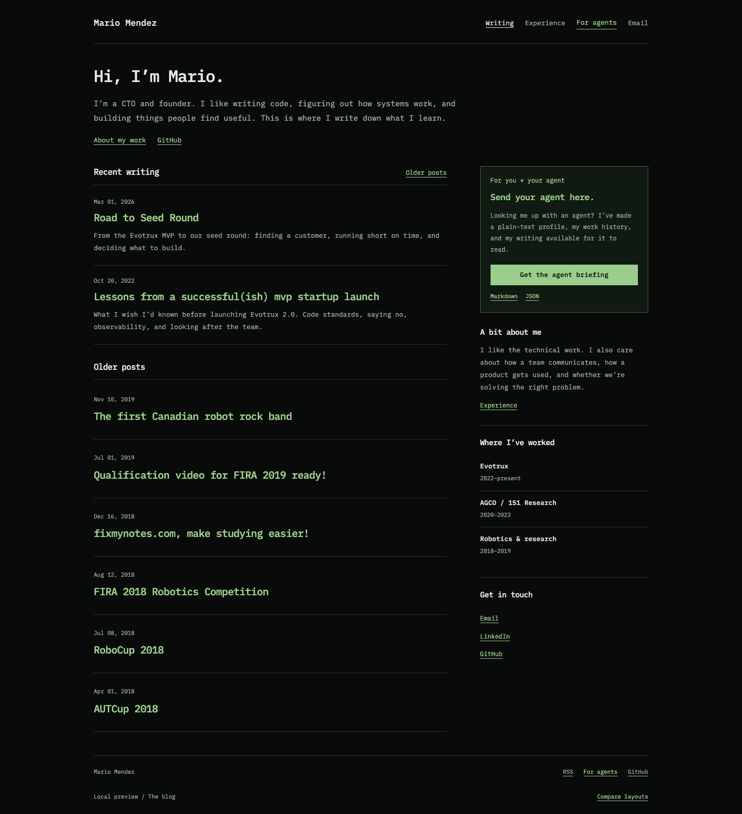
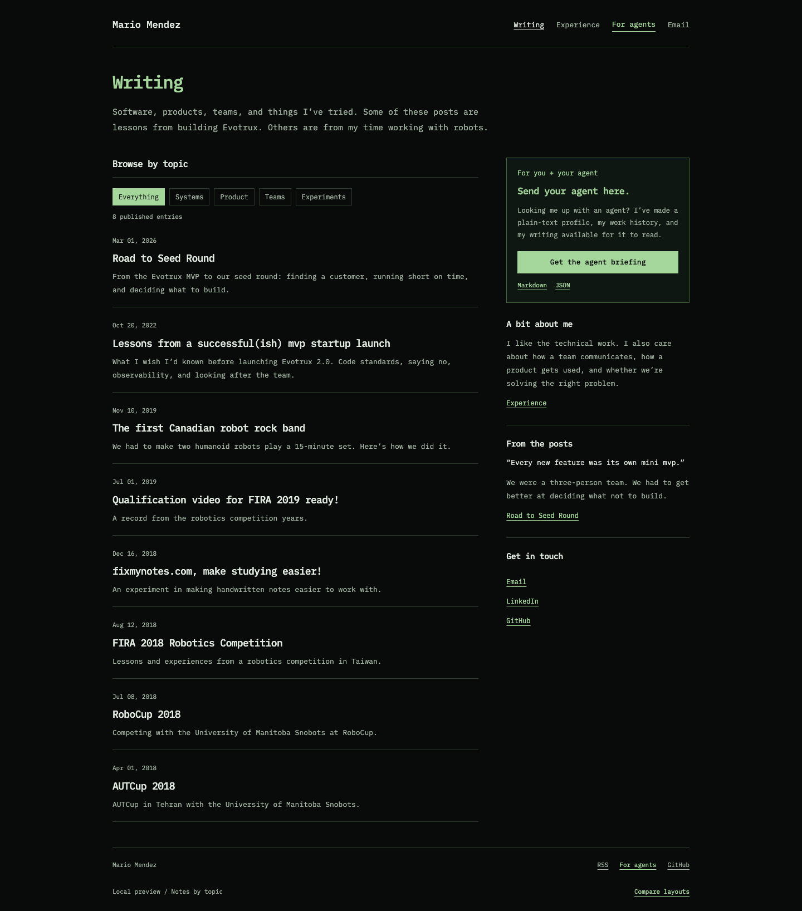
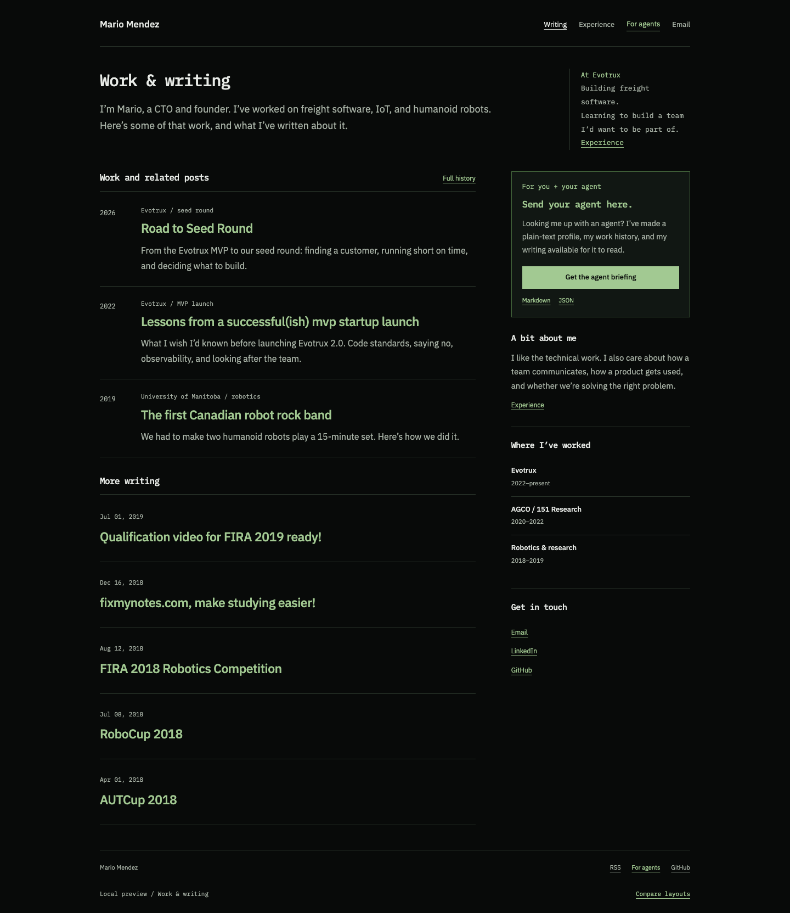

The blog

Mono throughout. A short introduction, recent posts, and work history in the sidebar. The closest to a personal software blog.
Open the blogThe writing and experience structure, with a different type treatment and a more direct voice. These three layouts use locally hosted IBM Plex fonts. Open one and try a full post, not just the homepage.

Mono throughout. A short introduction, recent posts, and work history in the sidebar. The closest to a personal software blog.
Open the blog
A denser index with subject filters. Mono text, green section headings, and fewer introductory elements. For browsing the writing by interest.
Open the topic index
Mono navigation and headings, Plex Sans for the longer text. Dated work entries lead to the related posts. A softer reading option on the same dark background.
Open work & writingVisible in the navigation and on every homepage. A dedicated page with a copyable briefing prompt, plain-text profile, structured work history, and all eight posts as Markdown.
The mono font carries enough identity on its own. The introduction is personal, the writing is easy to find, and the green agent panel is useful. Compare its reading view with Work & writing to decide whether full mono is comfortable for long posts.
The cream palettes, serif headlines, big slogans, conceptual diagram, and writing prompts are gone. These previews keep the real article text and existing history. The public site hasn’t changed.
Design guidance: Anthropic frontend-design. Fonts: IBM Plex.